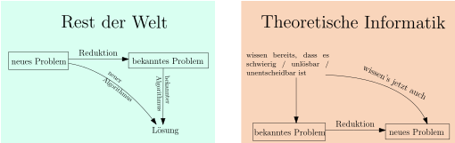

7.8emu_content/07/07-08-PCP-applications.emu:41:50Anwendungen des Postschen Korrespondenzproblemsemu_content/07/07-08-PCP-applications.emu:42:50
Erinnerin Sie sich an kontextfreie Grammatiken? Das waren formale Grammatiken wie zum Beispielemu_content/07/07-08-PCP-applications.emu:45:50emu_content/07/07-08-PCP-applications.emu:46:50$$\begin{align*}
S&\rightarrow Tc \\
T&\rightarrow TaTb \\
T&\rightarrow \epsilon
\end{align*}$$
emu_content/07/07-08-PCP-applications.emu:50:50Diese Grammatiken erlauben uns, gewisse Sprachen zu beschreiben, indem Sie Regeln festlegen -emu_content/07/07-08-PCP-applications.emu:51:50hieremu_content/07/07-08-PCP-applications.emu:52:50emu_content/07/07-08-PCP-applications.emu:53:50Produktionenemu_content/07/07-08-PCP-applications.emu:53:50
genannt, nach welchen man aus dem Startsymbol
emu_content/07/07-08-PCP-applications.emu:53:50\(S\)
Wörter über dem
emu_content/07/07-08-PCP-applications.emu:53:50Alphabetemu_content/07/07-08-PCP-applications.emu:54:50(hier: emu_content/07/07-08-PCP-applications.emu:55:50\(\{a,b,c\}\)) ableiten kann. Beispielsweise:emu_content/07/07-08-PCP-applications.emu:55:50emu_content/07/07-08-PCP-applications.emu:56:50$$\begin{align*}
S \Rightarrow Tc \Rightarrow TaTbc \Rightarrow TaTaTbbc \Rightarrow
TaTabbc \Rightarrow Taabbc \Rightarrow aabbc
\end{align*}$$
emu_content/07/07-08-PCP-applications.emu:59:50Kontextfreie Grammatiken werden zum Beispiel verwendet, um die Syntax von Dateiformaten,emu_content/07/07-08-PCP-applications.emu:60:50Programmiersprachen und manchmal sogar natürlicher Sprachen zu beschreiben. Es wäre daheremu_content/07/07-08-PCP-applications.emu:61:50schön, über gegebene kontextfreie Grammatik möglichst viele Dinge herausfinden zu können.emu_content/07/07-08-PCP-applications.emu:62:50Leider sind viele solche Probleme unentscheidbar. Als einfaches Beispiel:emu_content/07/07-08-PCP-applications.emu:63:50
Theorem emu_content/07/07-08-PCP-applications.emu:69:507.8.1emu_content/07/07-08-PCP-applications.emu:72:50emu_content/07/07-08-PCP-applications.emu:73:50
Wir wollen bestimmen, ob
emu_content/07/07-08-PCP-applications.emu:74:50aus einer gegebenen kontextfreien Grammatik emu_content/07/07-08-PCP-applications.emu:75:50\(G\)
ein Palindromwort ableitbar ist,
emu_content/07/07-08-PCP-applications.emu:75:50also ein emu_content/07/07-08-PCP-applications.emu:76:50\(\gamma\), das von rechts nach links gelesen gleich ist, sprichemu_content/07/07-08-PCP-applications.emu:76:50emu_content/07/07-08-PCP-applications.emu:77:50\(\gamma = \gamma^R\). Dieses Problem ist unentscheidbar.emu_content/07/07-08-PCP-applications.emu:77:50
Formal gesehen müssten wir eine Codierung kontextfreier Grammatiken über einem festenemu_content/07/07-08-PCP-applications.emu:80:50Alphabet (zum Beispiel emu_content/07/07-08-PCP-applications.emu:81:50\(\{0,1, \rightarrow, ;, \dots\}\)
angeben, um dann die
emu_content/07/07-08-PCP-applications.emu:81:50Spracheemu_content/07/07-08-PCP-applications.emu:81:50deremu_content/07/07-08-PCP-applications.emu:82:50Codierungen all jeneremu_content/07/07-08-PCP-applications.emu:83:50kontextfreien Grammatik, die ein Palindromwort ableiten könnenemu_content/07/07-08-PCP-applications.emu:84:50emu_content/07/07-08-PCP-applications.emu:84:50definieren zu können. Da wir aber mittlerweile verstanden haben, dass alleemu_content/07/07-08-PCP-applications.emu:85:50"endlichen" Objekte irgendwie auf Turingmschinen-verträgliche Weise codiert werden können,emu_content/07/07-08-PCP-applications.emu:86:50ersparen wir uns diese Formalitäten.emu_content/07/07-08-PCP-applications.emu:87:50
emu_content/07/07-08-PCP-applications.emu:91:50Beweis.emu_content/07/07-08-PCP-applications.emu:91:50emu_content/07/07-08-PCP-applications.emu:91:50Wir zeigen: wenn man zu einer gegebenen kontextfreien Grammatik entscheiden könnte,emu_content/07/07-08-PCP-applications.emu:92:50ob sie ein Palindromwort ableiten kann, dann könnten wir auch entscheiden, ob einemu_content/07/07-08-PCP-applications.emu:93:50gegebenes PCP-Puzzle eine Lösung hat. Da wir bereits Letzteres als unentscheidbaremu_content/07/07-08-PCP-applications.emu:94:50erkannt haben, schließen wir, dass Ersteres auch unentscheidbar ist.emu_content/07/07-08-PCP-applications.emu:95:50
Konkret sei uns nun also ein PCP-Puzzle emu_content/07/07-08-PCP-applications.emu:98:50\(P\)
gegeben. Wir bauen daraus eine
emu_content/07/07-08-PCP-applications.emu:98:50kontextfreie Grammatik emu_content/07/07-08-PCP-applications.emu:99:50\(G\), so dassemu_content/07/07-08-PCP-applications.emu:99:50emu_content/07/07-08-PCP-applications.emu:100:50\(G\)
genau dann ein Palindromwort ableiten kann, wenn
emu_content/07/07-08-PCP-applications.emu:100:50\(P\)
eine Lösung hat.
emu_content/07/07-08-PCP-applications.emu:100:50Die Konstruktion ist überraschend einfach. Wir erschaffen ein Startsymbol emu_content/07/07-08-PCP-applications.emu:101:50\(S\)emu_content/07/07-08-PCP-applications.emu:101:50für unsere Grammatik und erstellen zu jeder Kachel emu_content/07/07-08-PCP-applications.emu:102:50\(\alpha : \beta\)
die
emu_content/07/07-08-PCP-applications.emu:102:50Grammatikregelemu_content/07/07-08-PCP-applications.emu:103:50emu_content/07/07-08-PCP-applications.emu:104:50$$\begin{align*}
S&\rightarrow \alpha S \beta^R \ ,
\end{align*}$$
emu_content/07/07-08-PCP-applications.emu:106:50wobei emu_content/07/07-08-PCP-applications.emu:107:50\(\beta^R\)
das Wort
emu_content/07/07-08-PCP-applications.emu:107:50\(\beta\)
von rechts nach links gelesen bedeutet, also
emu_content/07/07-08-PCP-applications.emu:107:50emu_content/07/07-08-PCP-applications.emu:108:50\((xyz)^R = zyx\). Wir fügen noch eine weitere Regel hinzu:emu_content/07/07-08-PCP-applications.emu:108:50emu_content/07/07-08-PCP-applications.emu:109:50$$\begin{align*}
S&\rightarrow \$ \ ,
\end{align*}$$
emu_content/07/07-08-PCP-applications.emu:111:50wobei emu_content/07/07-08-PCP-applications.emu:112:50\(\$\)
ein neues Zeichen ist, dass nicht in der Symbolmenge des PCP-Puzzles
emu_content/07/07-08-PCP-applications.emu:112:50\(P\)emu_content/07/07-08-PCP-applications.emu:112:50enthalten ist.emu_content/07/07-08-PCP-applications.emu:113:50
Behauptung emu_content/07/07-08-PCP-applications.emu:119:507.8.2emu_content/07/07-08-PCP-applications.emu:122:50emu_content/07/07-08-PCP-applications.emu:123:50
Wenn die Grammatik
emu_content/07/07-08-PCP-applications.emu:124:50\(G\)
ein Palindromwort
emu_content/07/07-08-PCP-applications.emu:124:50ableiten kann, dann hat das PCP-Puzzle emu_content/07/07-08-PCP-applications.emu:125:50\(P\)
eine Lösung.
emu_content/07/07-08-PCP-applications.emu:125:50
emu_content/07/07-08-PCP-applications.emu:129:50Beweis.emu_content/07/07-08-PCP-applications.emu:129:50emu_content/07/07-08-PCP-applications.emu:129:50Die letzte angewandte Regel muss emu_content/07/07-08-PCP-applications.emu:130:50\(S \rightarrow \$\)
sein, und somit hat
emu_content/07/07-08-PCP-applications.emu:130:50das abgeleitete Wort die Formemu_content/07/07-08-PCP-applications.emu:131:50emu_content/07/07-08-PCP-applications.emu:132:50$$\begin{align*}
\alpha_1 \alpha_2 \dots \alpha_n \$ \beta_n^R \dots \beta_2^R \beta_1^R \ .
\end{align*}$$
emu_content/07/07-08-PCP-applications.emu:134:50Jedes Paar emu_content/07/07-08-PCP-applications.emu:135:50\(\alpha_i : \beta_i\)
ist eine Kachel des PCP-Puzzles. Wenn das
emu_content/07/07-08-PCP-applications.emu:135:50Wort ein Palindrom ist, dann gilt emu_content/07/07-08-PCP-applications.emu:136:50\(\alpha_1 \dots \alpha_n = \beta_1 \dots \beta_n\)emu_content/07/07-08-PCP-applications.emu:136:50und somit istemu_content/07/07-08-PCP-applications.emu:137:50emu_content/07/07-08-PCP-applications.emu:138:50$$\begin{align*}
(\alpha_1 : \beta_1) (\alpha_2 : \beta_2)\dots (\alpha_n : \beta_n)
\end{align*}$$
emu_content/07/07-08-PCP-applications.emu:140:50eine Lösung des PCP-Puzzles.emu_content/07/07-08-PCP-applications.emu:141:50emu_content/07/07-08-PCP-applications.emu:145:50\(\square\)emu_content/07/07-08-PCP-applications.emu:145:50
Behauptung emu_content/07/07-08-PCP-applications.emu:151:507.8.3emu_content/07/07-08-PCP-applications.emu:154:50emu_content/07/07-08-PCP-applications.emu:155:50
Wenn
emu_content/07/07-08-PCP-applications.emu:156:50das PCP-Puzzle emu_content/07/07-08-PCP-applications.emu:157:50\(P\)
eine Lösung hat, dann kann die Grammatik
emu_content/07/07-08-PCP-applications.emu:157:50\(G\)
ein Palindromwort
emu_content/07/07-08-PCP-applications.emu:157:50ableiten.emu_content/07/07-08-PCP-applications.emu:158:50
emu_content/07/07-08-PCP-applications.emu:162:50Beweis.emu_content/07/07-08-PCP-applications.emu:162:50emu_content/07/07-08-PCP-applications.emu:162:50Seiemu_content/07/07-08-PCP-applications.emu:163:50emu_content/07/07-08-PCP-applications.emu:164:50$$\begin{align*}
(\alpha_1 : \beta_1) (\alpha_2 : \beta_2)\dots (\alpha_n : \beta_n)
\end{align*}$$
emu_content/07/07-08-PCP-applications.emu:166:50eine Lösung des Puzzles, also emu_content/07/07-08-PCP-applications.emu:167:50\(\alpha_1 \alpha_2 \dots \alpha_n = \beta_1 \beta_2 \dots
\beta_n \)
.emu_content/07/07-08-PCP-applications.emu:168:50Dann ist auchemu_content/07/07-08-PCP-applications.emu:169:50emu_content/07/07-08-PCP-applications.emu:170:50$$\begin{align*}
\alpha_1 \alpha_2 \dots \alpha_n \$ (\beta_1 \beta_2 \dots \beta_n)^R
\end{align*}$$
emu_content/07/07-08-PCP-applications.emu:172:50ein Palindrom und kann von emu_content/07/07-08-PCP-applications.emu:173:50\(G\)
abgeleitet werden:
emu_content/07/07-08-PCP-applications.emu:173:50emu_content/07/07-08-PCP-applications.emu:174:50$$\begin{align*}
S \Rightarrow \alpha_1 S \beta_1^R \Rightarrow \alpha_1 \alpha_2 S \beta_2^R \beta_1^R
\Rightarrow
\dots \Rightarrow
\alpha_1 \alpha_2 \dots \alpha_n S \beta_n^R \dots \beta_2^R \beta_1^R \Rightarrow
\alpha_1 \alpha_2 \dots \alpha_n \$ \beta_n^R \dots \beta_2^R \beta_1^R
\end{align*}$$
emu_content/07/07-08-PCP-applications.emu:180:50Somit ist gezeigt, dass emu_content/07/07-08-PCP-applications.emu:181:50\(G\)
ein Palindromwort ableiten kann.
emu_content/07/07-08-PCP-applications.emu:181:50emu_content/07/07-08-PCP-applications.emu:185:50\(\square\)emu_content/07/07-08-PCP-applications.emu:185:50
Hätten wir nun also einen Algorithmus, der für eine gegebene kontextfreie Grammatikemu_content/07/07-08-PCP-applications.emu:186:50entscheiden könnte, ob sie ein Palindromwort ableiten kann, dann könnten wiremu_content/07/07-08-PCP-applications.emu:187:50PCP-Puzzles wie folgt entscheiden: nimm das Puzzle emu_content/07/07-08-PCP-applications.emu:188:50\(P\), baue nach den obigenemu_content/07/07-08-PCP-applications.emu:188:50Regeln daraus die Grammatik emu_content/07/07-08-PCP-applications.emu:189:50\(G\)
und frage dann den Algorithmus, ob
emu_content/07/07-08-PCP-applications.emu:189:50emu_content/07/07-08-PCP-applications.emu:190:50\(G\)
ein Palindromwort ableiten kann. Dies beantwortet auch die Frage
emu_content/07/07-08-PCP-applications.emu:190:50nach der Lösbarkeit des gegebenen PCP-Puzzles.emu_content/07/07-08-PCP-applications.emu:191:50emu_content/07/07-08-PCP-applications.emu:195:50\(\square\)emu_content/07/07-08-PCP-applications.emu:195:50
Es lohnt sich, an dieser Stelle zu pausieren. Was Sie gerade gesehen haben,emu_content/07/07-08-PCP-applications.emu:201:50ist eine emu_content/07/07-08-PCP-applications.emu:202:50Reduktionemu_content/07/07-08-PCP-applications.emu:202:50. Im "echten" Leben verwenden wir Reduktionen,emu_content/07/07-08-PCP-applications.emu:202:50um bereits gefundene Lösungen zu "recyceln". Beispielsweise:emu_content/07/07-08-PCP-applications.emu:203:50
emu_content/07/07-08-PCP-applications.emu:207:50Aufgabe:emu_content/07/07-08-PCP-applications.emu:207:50
Zeigen Sie, dass die Funktion
emu_content/07/07-08-PCP-applications.emu:207:50emu_content/07/07-08-PCP-applications.emu:208:50\(n \mapsto n!\)
im
emu_content/07/07-08-PCP-applications.emu:208:50\(\lambda\)-Kalkül berechenbar ist.emu_content/07/07-08-PCP-applications.emu:208:50
Wir wissen bereits, wie man emu_content/07/07-08-PCP-applications.emu:211:50\(n \mapsto n!\)
als
emu_content/07/07-08-PCP-applications.emu:211:50primitiv-rekursive Funktion schreibt.emu_content/07/07-08-PCP-applications.emu:212:50
Wir wissen bereits, wie man eine allgemeine primitiv rekursive Funktionemu_content/07/07-08-PCP-applications.emu:215:50im emu_content/07/07-08-PCP-applications.emu:216:50\(\lambda\)-Kalkül implementiert.emu_content/07/07-08-PCP-applications.emu:216:50
Wir schließen nun, dass emu_content/07/07-08-PCP-applications.emu:219:50\(n \mapsto n!\)
im
emu_content/07/07-08-PCP-applications.emu:219:50\(\lambda\)-Kalkül implementierbar ist,emu_content/07/07-08-PCP-applications.emu:219:50und ersparen uns die Details.emu_content/07/07-08-PCP-applications.emu:220:50
Im Kontext der Turing-Berechenbarkeit können wir dieses Prinzip wie folgtemu_content/07/07-08-PCP-applications.emu:223:50formalisieren:emu_content/07/07-08-PCP-applications.emu:224:50
Definition emu_content/07/07-08-PCP-applications.emu:230:507.8.4emu_content/07/07-08-PCP-applications.emu:233:50emu_content/07/07-08-PCP-applications.emu:234:50Seien emu_content/07/07-08-PCP-applications.emu:235:50\(L_1 \subseteq \Sigma_1\)
und
emu_content/07/07-08-PCP-applications.emu:235:50\(L_2 \subseteq \Sigma_2\)
zwei Sprachen.
emu_content/07/07-08-PCP-applications.emu:235:50Eine emu_content/07/07-08-PCP-applications.emu:236:50Reduktion von emu_content/07/07-08-PCP-applications.emu:236:50\(L_1\)
nach
emu_content/07/07-08-PCP-applications.emu:236:50\(L_2\)emu_content/07/07-08-PCP-applications.emu:236:50
ist eine Turing-berechenbare Funktion
emu_content/07/07-08-PCP-applications.emu:236:50emu_content/07/07-08-PCP-applications.emu:237:50$$\begin{align*}
f : \Sigma_1^* \rightarrow \Sigma_2^*
\end{align*}$$
emu_content/07/07-08-PCP-applications.emu:239:50mit der Eigenschaft, dassemu_content/07/07-08-PCP-applications.emu:240:50emu_content/07/07-08-PCP-applications.emu:241:50$$\begin{align*}
\forall x \in \Sigma_1^*: \ x \in L_1 \Leftrightarrow f(x) \in L_2 \ .
\end{align*}$$
emu_content/07/07-08-PCP-applications.emu:243:50
Erinnern Sie sich: dass emu_content/07/07-08-PCP-applications.emu:246:50\(f\)
Turing-berechenbar ist, heißt, dass es eine Turingmaschine
emu_content/07/07-08-PCP-applications.emu:246:50emu_content/07/07-08-PCP-applications.emu:247:50\(_f\)
gibt mit einem dezidierten Ausgabe-Band, so dass
emu_content/07/07-08-PCP-applications.emu:247:50\(M_f(x)\)
für jedes Eingabewort
emu_content/07/07-08-PCP-applications.emu:247:50terminiert und zum Zeitpunkt der Terminierung emu_content/07/07-08-PCP-applications.emu:248:50\(f(x)\)
auf das Ausgabeband geschrieben hat.
emu_content/07/07-08-PCP-applications.emu:248:50Wenn wir eine Reduktion von emu_content/07/07-08-PCP-applications.emu:249:50\(L_1\)
nach
emu_content/07/07-08-PCP-applications.emu:249:50\(L_2\)
haben, dann liefert uns jeder
emu_content/07/07-08-PCP-applications.emu:249:50Entscheidungsalgorithmusemu_content/07/07-08-PCP-applications.emu:250:50für emu_content/07/07-08-PCP-applications.emu:251:50\(L_2\)
unmittelbar einen Entscheidungsalgorithmus für
emu_content/07/07-08-PCP-applications.emu:251:50\(L_1\):emu_content/07/07-08-PCP-applications.emu:251:50
Beobachtung emu_content/07/07-08-PCP-applications.emu:257:507.8.5emu_content/07/07-08-PCP-applications.emu:260:50emu_content/07/07-08-PCP-applications.emu:261:50
Wenn
emu_content/07/07-08-PCP-applications.emu:262:50\(f\)
eine Reduktion von
emu_content/07/07-08-PCP-applications.emu:262:50\(L_1\)
nach
emu_content/07/07-08-PCP-applications.emu:262:50emu_content/07/07-08-PCP-applications.emu:263:50\(L_2\)
ist und
emu_content/07/07-08-PCP-applications.emu:263:50\(L_2\)
entscheidbar ist, dann ist auch
emu_content/07/07-08-PCP-applications.emu:263:50\(L_1\)
entscheidbar.
emu_content/07/07-08-PCP-applications.emu:263:50
emu_content/07/07-08-PCP-applications.emu:267:50Beweis.emu_content/07/07-08-PCP-applications.emu:267:50emu_content/07/07-08-PCP-applications.emu:267:50Sei emu_content/07/07-08-PCP-applications.emu:268:50\(M_2\)
eine Turingmaschine, die
emu_content/07/07-08-PCP-applications.emu:268:50\(L_2\)
entscheidet und sei
emu_content/07/07-08-PCP-applications.emu:268:50\(M_f\)
die Turingmaschine,
emu_content/07/07-08-PCP-applications.emu:268:50die emu_content/07/07-08-PCP-applications.emu:269:50\(f\)
berechnet.
emu_content/07/07-08-PCP-applications.emu:269:50Wir bauen nun eine neue Turingmaschine emu_content/07/07-08-PCP-applications.emu:270:50\(M_1\).emu_content/07/07-08-PCP-applications.emu:270:50Sie nimmt das Eingabewort emu_content/07/07-08-PCP-applications.emu:271:50\(x \in \Sigma_1^* \)
und lässt die Turingmaschine
emu_content/07/07-08-PCP-applications.emu:271:50emu_content/07/07-08-PCP-applications.emu:272:50\(M_f\)
auf
emu_content/07/07-08-PCP-applications.emu:272:50\(x\)
arbeiten; wenn
emu_content/07/07-08-PCP-applications.emu:272:50\(M_f\)
terminiert, steht
emu_content/07/07-08-PCP-applications.emu:272:50\(f(x)\)
auf ihrem Ausgabeband.
emu_content/07/07-08-PCP-applications.emu:272:50Wir rufen nun die Turing-Maschien emu_content/07/07-08-PCP-applications.emu:273:50\(M_2\)
mit dem Eingabewort
emu_content/07/07-08-PCP-applications.emu:273:50\(f(x)\)
auf.
emu_content/07/07-08-PCP-applications.emu:273:50Wenn emu_content/07/07-08-PCP-applications.emu:274:50\(M_2\)
akzeptiert (oder eben ablehnt), dann lassen wir
emu_content/07/07-08-PCP-applications.emu:274:50\(M_1\)
akzeptieren (oder eben
emu_content/07/07-08-PCP-applications.emu:274:50ablehnen). Es gilt nun:emu_content/07/07-08-PCP-applications.emu:275:50emu_content/07/07-08-PCP-applications.emu:276:50$$\begin{align*}
M_1(x) = \texttt{accept}&\Leftrightarrow M_2(f(x)) = \texttt{accept} \\
&\Leftrightarrow f(x) \in L_2 \tag{weil $M_2$ die Sprache $L_2$ entscheidet} \\
&\Leftrightarrow x \in L_1 \tag{weil $f$ eine Reduktion ist}
\end{align*}$$
emu_content/07/07-08-PCP-applications.emu:280:50und somit entscheidet emu_content/07/07-08-PCP-applications.emu:281:50\(M_1\)
die Sprache
emu_content/07/07-08-PCP-applications.emu:281:50\(L_1\).emu_content/07/07-08-PCP-applications.emu:281:50emu_content/07/07-08-PCP-applications.emu:285:50\(\square\)emu_content/07/07-08-PCP-applications.emu:285:50
Stellen Sie sich einfach vor, dass emu_content/07/07-08-PCP-applications.emu:286:50\(M_f\)
der Code ist, den Sie selber schreiben müssen,
emu_content/07/07-08-PCP-applications.emu:286:50und emu_content/07/07-08-PCP-applications.emu:287:50\(M_2\)
die "Bibliotheksfunktion" ist, die Sie ohne groß nachzudenken aufrufen,
emu_content/07/07-08-PCP-applications.emu:287:50weil sie ja bereist von anderen Leuten (hoffentlich korrekt) implementiert worden ist.emu_content/07/07-08-PCP-applications.emu:288:50Behauptung 4.6.8 zeigt also, das etwas emu_content/07/07-08-PCP-applications.emu:289:50möglichemu_content/07/07-08-PCP-applications.emu:289:50
ist.
emu_content/07/07-08-PCP-applications.emu:289:50In der Berechenbarkeitstheorie und Komplexitätstheorie sind wir eher daran interessiert,emu_content/07/07-08-PCP-applications.emu:290:50zu zeigen, was emu_content/07/07-08-PCP-applications.emu:291:50nicht möglichemu_content/07/07-08-PCP-applications.emu:291:50
ist, und wenden daher häufiger das Kontrapositiv
emu_content/07/07-08-PCP-applications.emu:291:50der Behauptung an:emu_content/07/07-08-PCP-applications.emu:292:50
Beobachtung emu_content/07/07-08-PCP-applications.emu:298:507.8.6emu_content/07/07-08-PCP-applications.emu:301:50emu_content/07/07-08-PCP-applications.emu:302:50
Wenn
emu_content/07/07-08-PCP-applications.emu:303:50\(f\)
eine Reduktion von
emu_content/07/07-08-PCP-applications.emu:303:50\(L_1\)
nach
emu_content/07/07-08-PCP-applications.emu:303:50emu_content/07/07-08-PCP-applications.emu:304:50\(L_2\)
ist und
emu_content/07/07-08-PCP-applications.emu:304:50\(L_1\)
unentscheidbar ist, dann ist auch
emu_content/07/07-08-PCP-applications.emu:304:50\(L_2\)
unentscheidbar.
emu_content/07/07-08-PCP-applications.emu:304:50
emu_content/07/07-08-PCP-applications.emu:308:50Beweis.emu_content/07/07-08-PCP-applications.emu:308:50emu_content/07/07-08-PCP-applications.emu:308:50Angenommen, emu_content/07/07-08-PCP-applications.emu:309:50\(L_2\)
wäre entscheidbar. Dann wäre laut Behauptung 4.6.8 die Sprache
emu_content/07/07-08-PCP-applications.emu:309:50emu_content/07/07-08-PCP-applications.emu:310:50\(L_1\)
ja auch entscheidbar, was sie aber nach Annahme nicht ist. Daher ist
emu_content/07/07-08-PCP-applications.emu:310:50emu_content/07/07-08-PCP-applications.emu:311:50\(L_2\)
eben nicht entscheidbar.
emu_content/07/07-08-PCP-applications.emu:311:50emu_content/07/07-08-PCP-applications.emu:315:50\(\square\)emu_content/07/07-08-PCP-applications.emu:315:50
Beachten Sie nun, dass so etwas wie Behauptung 4.6.9 bereits oben angewandt haben: wir habenemu_content/07/07-08-PCP-applications.emu:316:50das Haltproblem auf das MPCP-Problem reduziert; jenes dann auf das PCP; und schließlich PCPemu_content/07/07-08-PCP-applications.emu:317:50auf das "Kann ein Palindrom abgeleitet werden"-Problem. Wir haben also eine ganze Ketteemu_content/07/07-08-PCP-applications.emu:318:50von Reduktionen bereits durchgeführt.emu_content/07/07-08-PCP-applications.emu:319:50Für Neulinge ist diese Richtung oft inintuitiv und verwirrend. Dies spiegeltemu_content/07/07-08-PCP-applications.emu:320:50sich in der Verwendung des Konjunktivs emu_content/07/07-08-PCP-applications.emu:321:50wäre / wäreemu_content/07/07-08-PCP-applications.emu:321:50
in Behauptung 4.6.9 wider.
emu_content/07/07-08-PCP-applications.emu:321:50Auch ist es schlicht ungewohnt, ein emu_content/07/07-08-PCP-applications.emu:322:50altesemu_content/07/07-08-PCP-applications.emu:322:50
Problem auf ein
emu_content/07/07-08-PCP-applications.emu:322:50neuesemu_content/07/07-08-PCP-applications.emu:322:50
zu reduzieren
emu_content/07/07-08-PCP-applications.emu:322:50statt umgekehrt.emu_content/07/07-08-PCP-applications.emu:323:50

Üben wir also Reduktionen:emu_content/07/07-08-PCP-applications.emu:329:50
Gegeben zwei kontextfreie Grammatiken emu_content/07/07-08-PCP-applications.emu:343:50\(G_1, G_2\). Es istemu_content/07/07-08-PCP-applications.emu:343:50unentscheidbar, ob emu_content/07/07-08-PCP-applications.emu:344:50\(L(G_1) \cap L(G_2)\)
nichtleer ist, ob es
emu_content/07/07-08-PCP-applications.emu:344:50also ein Wort emu_content/07/07-08-PCP-applications.emu:345:50\(x\)
mit
emu_content/07/07-08-PCP-applications.emu:345:50\(x \in G_1\)
und
emu_content/07/07-08-PCP-applications.emu:345:50\(x \in G_2\)
gibt.
emu_content/07/07-08-PCP-applications.emu:345:50
Dieses Problem ist als emu_content/07/07-08-PCP-applications.emu:348:50Schnittproblem kontextfreier Sprachenemu_content/07/07-08-PCP-applications.emu:348:50emu_content/07/07-08-PCP-applications.emu:348:50bekannt.emu_content/07/07-08-PCP-applications.emu:349:50
emu_content/07/07-08-PCP-applications.emu:353:50Beweis.emu_content/07/07-08-PCP-applications.emu:353:50emu_content/07/07-08-PCP-applications.emu:353:50Wir reduzieren das Palindromwortproblem (bereits bekannt) auf das Schnittproblem (neuesemu_content/07/07-08-PCP-applications.emu:354:50Problem).emu_content/07/07-08-PCP-applications.emu:355:50Sei emu_content/07/07-08-PCP-applications.emu:356:50\(G\)
eine Grammatik und
emu_content/07/07-08-PCP-applications.emu:356:50\(\Sigma\)
die Menge der Terminalsymbole. Sei
emu_content/07/07-08-PCP-applications.emu:356:50\(G'\)
die
emu_content/07/07-08-PCP-applications.emu:356:50folgende Grammatik:emu_content/07/07-08-PCP-applications.emu:357:50emu_content/07/07-08-PCP-applications.emu:358:50$$\begin{align*}
S'&\rightarrow x S' x \tag{ für alle \(x \in \Sigma\) }\\
S'&\rightarrow x \tag{ für alle \(x \in \Sigma\) }\\
S'&\rightarrow \epsilon
\end{align*}$$
emu_content/07/07-08-PCP-applications.emu:362:50Die Grammatik emu_content/07/07-08-PCP-applications.emu:363:50\(G'\)
erzeugt genau die Sprache der Palindromwörter über
emu_content/07/07-08-PCP-applications.emu:363:50\(\Sigma\).emu_content/07/07-08-PCP-applications.emu:363:50Unsere Reduktion emu_content/07/07-08-PCP-applications.emu:364:50\(f\)
nimmt nun als Eingabe eine kontextfreie Grammatik
emu_content/07/07-08-PCP-applications.emu:364:50\(G\)
(bzw. deren
emu_content/07/07-08-PCP-applications.emu:364:50Codierung) und gibt das Paar emu_content/07/07-08-PCP-applications.emu:365:50\((G,G')\)
aus (bzw. deren Codierungen). Wir stellen fest:
emu_content/07/07-08-PCP-applications.emu:365:50emu_content/07/07-08-PCP-applications.emu:366:50\(G\)
kann ein Palindromwort ableiten genau dann, wenn
emu_content/07/07-08-PCP-applications.emu:366:50\(L(G) \cap L(G') \ne \emptyset\),emu_content/07/07-08-PCP-applications.emu:366:50wenn es also ein Wort emu_content/07/07-08-PCP-applications.emu:367:50\(\alpha\)
gibt, dass aus
emu_content/07/07-08-PCP-applications.emu:367:50\(G\)
und aus
emu_content/07/07-08-PCP-applications.emu:367:50\(G'\)
abgeleitet werden kann.
emu_content/07/07-08-PCP-applications.emu:367:50Die Funktion emu_content/07/07-08-PCP-applications.emu:368:50\(f\)
ist also eine Reduktion vom Palindromwortproblem auf das Schnittproblem.
emu_content/07/07-08-PCP-applications.emu:368:50Mit Behauptung 4.6.9 zusammen heißt das, dass das Schnittproblem unentscheidbar ist.emu_content/07/07-08-PCP-applications.emu:369:50emu_content/07/07-08-PCP-applications.emu:373:50\(\square\)emu_content/07/07-08-PCP-applications.emu:373:50
Theorem emu_content/07/07-08-PCP-applications.emu:379:507.8.8emu_content/07/07-08-PCP-applications.emu:382:50emu_content/07/07-08-PCP-applications.emu:383:50emu_content/07/07-08-PCP-applications.emu:384:50(Mehrdeutigkeitsproblem kontextfreier Sprachen)emu_content/07/07-08-PCP-applications.emu:384:50emu_content/07/07-08-PCP-applications.emu:384:50Gegeben eine kontextfreie Grammatik emu_content/07/07-08-PCP-applications.emu:385:50\(G\). Es ist unentscheidbar,emu_content/07/07-08-PCP-applications.emu:385:50ob emu_content/07/07-08-PCP-applications.emu:386:50\(G\)
mehrdeutig ist, d.h., ob es ein Wort
emu_content/07/07-08-PCP-applications.emu:386:50\(x \in \Sigma^*\)
gibt,
emu_content/07/07-08-PCP-applications.emu:386:50für das zwei verschiedene Ableitungsbäume existieren.emu_content/07/07-08-PCP-applications.emu:387:50
emu_content/07/07-08-PCP-applications.emu:392:50Falscher Beweis.emu_content/07/07-08-PCP-applications.emu:392:50emu_content/07/07-08-PCP-applications.emu:392:50Wir reduzieren das uns bereits bekannte Schnittproblem auf das Mehrdeutigkeitsproblem.emu_content/07/07-08-PCP-applications.emu:393:50Gegeben seien zwei kontextfreie Grammatiken emu_content/07/07-08-PCP-applications.emu:394:50\(G_1, G_2\)
mit Startsymbolen
emu_content/07/07-08-PCP-applications.emu:394:50\(S_1, S_2\)
und
emu_content/07/07-08-PCP-applications.emu:394:50Nichtterminalmenge emu_content/07/07-08-PCP-applications.emu:395:50\(N_1, N_2\). Wir machen in einem ersten Schritt die Mengen emu_content/07/07-08-PCP-applications.emu:395:50\(N_1\)
und
emu_content/07/07-08-PCP-applications.emu:395:50emu_content/07/07-08-PCP-applications.emu:396:50\(N_2\)
disjunkt (wenn sie es nicht eh schon sind; wir können beispielsweise jedes
emu_content/07/07-08-PCP-applications.emu:396:50\(X \in N_2\)emu_content/07/07-08-PCP-applications.emu:396:50inemu_content/07/07-08-PCP-applications.emu:397:50emu_content/07/07-08-PCP-applications.emu:398:50\(X'\)
umbenennen). Dann führen wir ein Super-Startsymbol
emu_content/07/07-08-PCP-applications.emu:398:50\(S\)
ein und zwei Produktionen:
emu_content/07/07-08-PCP-applications.emu:398:50emu_content/07/07-08-PCP-applications.emu:399:50$$\begin{align*}
S&\rightarrow S_1 \\
S&\rightarrow S_2
\end{align*}$$
emu_content/07/07-08-PCP-applications.emu:402:50und übernehmen alle Produktionen von emu_content/07/07-08-PCP-applications.emu:403:50\(G_1\)
und
emu_content/07/07-08-PCP-applications.emu:403:50\(G_2\). Dies ist unsere neue Grammatik emu_content/07/07-08-PCP-applications.emu:403:50\(G\).emu_content/07/07-08-PCP-applications.emu:403:50Sie sehen nun:emu_content/07/07-08-PCP-applications.emu:404:50wenn es ein emu_content/07/07-08-PCP-applications.emu:405:50\(x \in L(G_1) \cap L(G_2)\)
gibt, dann kann man
emu_content/07/07-08-PCP-applications.emu:405:50\(x\)
auf zwei verschiedene
emu_content/07/07-08-PCP-applications.emu:405:50Weisen in emu_content/07/07-08-PCP-applications.emu:406:50\(G\)
ableiten, nämlich
emu_content/07/07-08-PCP-applications.emu:406:50emu_content/07/07-08-PCP-applications.emu:407:50$$\begin{align*}
S&\Rightarrow S_1 \Rightarrow^* x \tag{Ableitung wie in $G_1$} \\
S&\Rightarrow S_2 \Rightarrow^* x \tag{Ableitung wie in $G_2$} \ ,
\end{align*}$$
emu_content/07/07-08-PCP-applications.emu:410:50und das sind wirklich zwei verschiedene Ableitungen, weil ja bereits emu_content/07/07-08-PCP-applications.emu:411:50\(S_1 \ne S_2\).emu_content/07/07-08-PCP-applications.emu:411:50Wenn nun umgekehrt ein Wort emu_content/07/07-08-PCP-applications.emu:412:50\(y\)
via
emu_content/07/07-08-PCP-applications.emu:412:50\(S_1\)
und via
emu_content/07/07-08-PCP-applications.emu:412:50\(S_2\)
ableitbar sein sollte
emu_content/07/07-08-PCP-applications.emu:412:50(emu_content/07/07-08-PCP-applications.emu:413:50\(G\)
also mehrdeutig sein sollte), dann bedeutet dies, dass
emu_content/07/07-08-PCP-applications.emu:413:50\(G_1\)
und
emu_content/07/07-08-PCP-applications.emu:413:50\(G_2\)
beide
emu_content/07/07-08-PCP-applications.emu:413:50das Wort emu_content/07/07-08-PCP-applications.emu:414:50\(y\)
ableiten können, also einen nichtleeren Schnitt haben.
emu_content/07/07-08-PCP-applications.emu:414:50Dies ist somit unsere Reduktion emu_content/07/07-08-PCP-applications.emu:415:50\(f\): nimm als Eingabe das Paar emu_content/07/07-08-PCP-applications.emu:415:50\(G_1, G_2\)
(bzw. dessen
emu_content/07/07-08-PCP-applications.emu:415:50Codierung),emu_content/07/07-08-PCP-applications.emu:416:50konstruiere emu_content/07/07-08-PCP-applications.emu:417:50\(G\)
und gib
emu_content/07/07-08-PCP-applications.emu:417:50\(G\)
aus. Dieses
emu_content/07/07-08-PCP-applications.emu:417:50\(f\)
reduziert das Schnittproblem auf das
emu_content/07/07-08-PCP-applications.emu:417:50Mehrdeutigkeitsproblem.emu_content/07/07-08-PCP-applications.emu:418:50emu_content/07/07-08-PCP-applications.emu:422:50\(\square\)emu_content/07/07-08-PCP-applications.emu:422:50
Haben Sie den Fehler im Beweis erkannt? Das Problem ist, dass es sein könnte, dassemu_content/07/07-08-PCP-applications.emu:425:50emu_content/07/07-08-PCP-applications.emu:426:50\(G_1\)
und
emu_content/07/07-08-PCP-applications.emu:426:50\(G_2\)
leeren Schnitt haben,
emu_content/07/07-08-PCP-applications.emu:426:50\(G_1\)
aber bereits mehrdeutig ist.
emu_content/07/07-08-PCP-applications.emu:426:50Die Ausgabe-Grammatik emu_content/07/07-08-PCP-applications.emu:427:50\(G\)
wäre dann auch mehrdeutig; also hätte die Reduktion
emu_content/07/07-08-PCP-applications.emu:427:50\(f\)emu_content/07/07-08-PCP-applications.emu:427:50einen Fehler gemacht.emu_content/07/07-08-PCP-applications.emu:428:50Wir müssen leider bis zum Postschen Korrespondenzproblem zurückgehen und direkt von dortemu_content/07/07-08-PCP-applications.emu:429:50reduzieren.emu_content/07/07-08-PCP-applications.emu:430:50Problematisch ist, dass ein PCP-Puzzle selbst mehrere Lösungen haben kann und auch füremu_content/07/07-08-PCP-applications.emu:431:50ein Lösungswort emu_content/07/07-08-PCP-applications.emu:432:50\(\gamma\)
es mehrere Möglichkeiten geben kann, es zu "legen", also
emu_content/07/07-08-PCP-applications.emu:432:50emu_content/07/07-08-PCP-applications.emu:433:50$$\begin{align*}
\top(s)&= \bottom(s) = \gamma \\
\top(s')&= \bottom(s') = \gamma \ .
\end{align*}$$
emu_content/07/07-08-PCP-applications.emu:436:50Wenn dem so wäre, dann würde bereits unsere Reduktion auf das Palindromwortproblem eineemu_content/07/07-08-PCP-applications.emu:437:50mehrdeutige Grammatik erzeugen. Wir gehen einen anderen Weg.emu_content/07/07-08-PCP-applications.emu:438:50Ich folge hier dem Tip in Exercise 5.21 ausemu_content/07/07-08-PCP-applications.emu:439:50Michael Sipsers Buch emu_content/07/07-08-PCP-applications.emu:440:50Introduction to the Theory of Computationemu_content/07/07-08-PCP-applications.emu:440:50, third edition.emu_content/07/07-08-PCP-applications.emu:440:50
emu_content/07/07-08-PCP-applications.emu:444:50Beweis.emu_content/07/07-08-PCP-applications.emu:444:50emu_content/07/07-08-PCP-applications.emu:444:50Sei ein PCP-Puzzle emu_content/07/07-08-PCP-applications.emu:445:50\(P = \{ (\alpha_1:\beta_1), \dots, (\alpha_n : \beta_n)\}\)
gegeben.
emu_content/07/07-08-PCP-applications.emu:445:50Wir erstellen nun eine kontextfreie Gramatik, die es dem "User" erlaubt, zu entscheiden,emu_content/07/07-08-PCP-applications.emu:446:50ob er das Wort via die oberen Teile emu_content/07/07-08-PCP-applications.emu:447:50\(\alpha_i\)
oder via die unteren Teile ableiten will;
emu_content/07/07-08-PCP-applications.emu:447:50wenn es auf beide Weisen geht, dann ist die Grammatik mehrdeutig und das PCP hat eine Lösung.emu_content/07/07-08-PCP-applications.emu:448:50Also:emu_content/07/07-08-PCP-applications.emu:449:50emu_content/07/07-08-PCP-applications.emu:450:50$$\begin{align*}
S&\rightarrow S_1 \\
S&\rightarrow S_2 \\
S_1&\rightarrow \alpha_i S_1 i \ | \ \alpha_i i \tag{für alle oberen Teile \(\alpha_i\)} \\
S_2&\rightarrow \beta_i S_2 i \ | \ \beta_i i \tag{für alle unteren Teile \(\beta_i\)}
\end{align*}$$
emu_content/07/07-08-PCP-applications.emu:455:50wobei emu_content/07/07-08-PCP-applications.emu:456:50\(1, 2, \dots, n\)
neue Symbole sind. Die Indizes
emu_content/07/07-08-PCP-applications.emu:456:50\(i\)
stellen sicher,
emu_content/07/07-08-PCP-applications.emu:456:50dass jede von emu_content/07/07-08-PCP-applications.emu:457:50\(S_1\)
ausgehende Ableitung eindeutig ist (und genau so von
emu_content/07/07-08-PCP-applications.emu:457:50\(S_2\));emu_content/07/07-08-PCP-applications.emu:457:50die einzige Mehrdeutigkeit kann aufkommen, wenn ein Wort sowohl via emu_content/07/07-08-PCP-applications.emu:458:50\(S_1\)
als
emu_content/07/07-08-PCP-applications.emu:458:50auch via emu_content/07/07-08-PCP-applications.emu:459:50\(S_2\)
ableitbar ist; und dies geschieht genau dann, wenn das PCP-Puzzle
emu_content/07/07-08-PCP-applications.emu:459:50eine Lösung hat. Wir haben nun also unsere Reduktion von PCP auf das Mehrdeutigkeitsproblem.emu_content/07/07-08-PCP-applications.emu:460:50emu_content/07/07-08-PCP-applications.emu:464:50\(\square\)emu_content/07/07-08-PCP-applications.emu:464:50